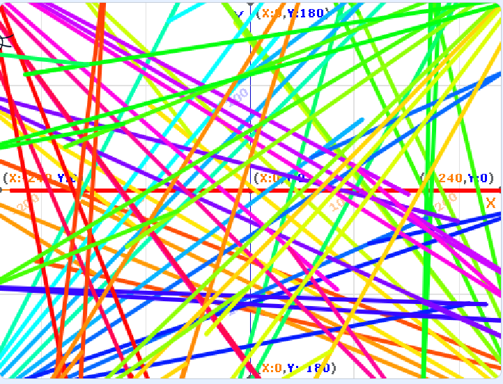
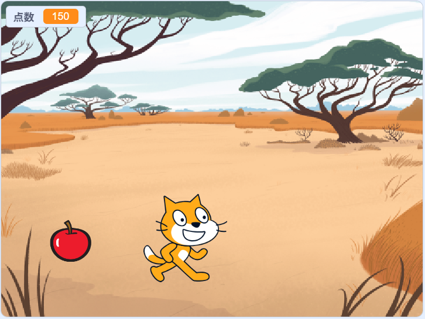

1週目のレポート ： 公大高専１年実習I-1
3a班2番 OK
第1週目
1-1 サイエンスアート

1.内容
スクラッチのプログラミングのブロックの動かし方や猫をどうすればいいのか理解できた。
例えばアート類のブロックを設置してから猫を動かしてサイエンスアートを描けるようになったり、矢印を使って横方向に動かしたりできるようになった。
2.感想
スクラッチの基礎中の基礎ができるようになったので、これからどんどんスクラッチを使って、ずっと何かを作り続ければ、
スクラッチだけでなく、プログラミング言語に興味をもち、学び、自分が想像しているものが作れると思った。
例えば
1-2 ゲーム

1.内容
スクラッチのプログラミングのブロックを使って猫を左右キーで動かしたり、背景を変えて印象を強めたり、
リンゴが上からランダムな場所から落ち、リンゴに触れたら消え、点数が入ったりするゲームを作った。
2.感想
ゲームを作ると言われ難しいだろうなと思ったが、少し手を動かすとどんどんブロックを設置でき、
ゲームがみるみる完成していって、ゲームを作るのはこんなに楽しいんだなと感じた。
1-3 ホームページ作成
私のホームページ
1.内容
ホームページはindex.htmlから開いて勝手にコードが書かれているので日本語の部分だけを消して、
書かれている内容に沿って趣味や得意なことを書いた。
さらに、各ページのリンクがなかったので追加した。
2.感想
ホームページをウェブ上でみると簡潔に文字と後ろになにか線があるだけですが、
コードを見てみると本当に理解ができなくて、簡単な文章をかくだけでもこんなにプログラミングを書くんだなと感じた。
各ページへのリンク
1週目のレポート
2週目のレポート
3週目のレポート
私のホームページ